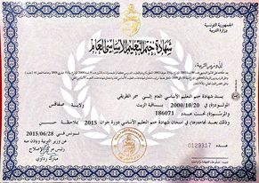
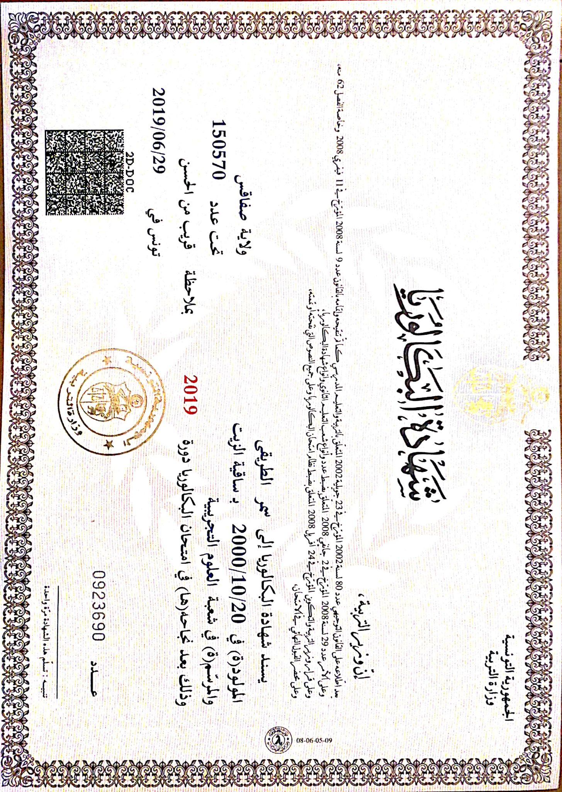
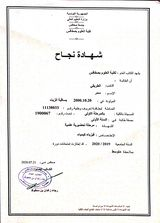
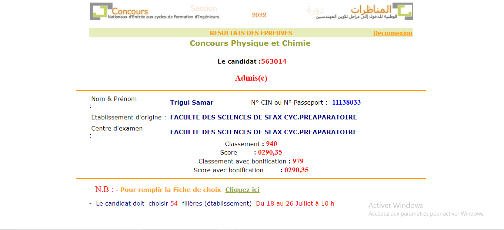

j'ai débuté mes études à l'âge de 6 ans a l'école primaire où j'ai passé 6 ans de plus.Puis, je suis allée au collége EL ONS et au 3éme année Là-bas , j'ai passé le concours d'entrée au lycée Pilote dans lequel j'ai réussi à avoir 14.18 de moyenne. En 2015 , je suis passée au Lycée Ibn Rachik alors j'ai suivi un parcours scientifique .En 2019, j'ai obtenu mon Baccalauréat en sciences expérimentales avec 12 de moyenne. Au début de l'année universitaire 2019/2021, j'ai commencé mon cycle préparatoire au Faculté des sciences de Sfax où j'ai passée 3 ans de ma vie et en 2022, j'ai enfin réussi au Concours d'entrée aux Ecoles d'Ingénieurs. Maintenant , dans cette année courrante , j'ai choisi de continuer mon cycle d'ingénieur au sein de l'université Nord Américaine: Institut Internationnal de Technologie connu sous le nom IIT.
voici mes diplomes obtenus durant mon curcus:
   